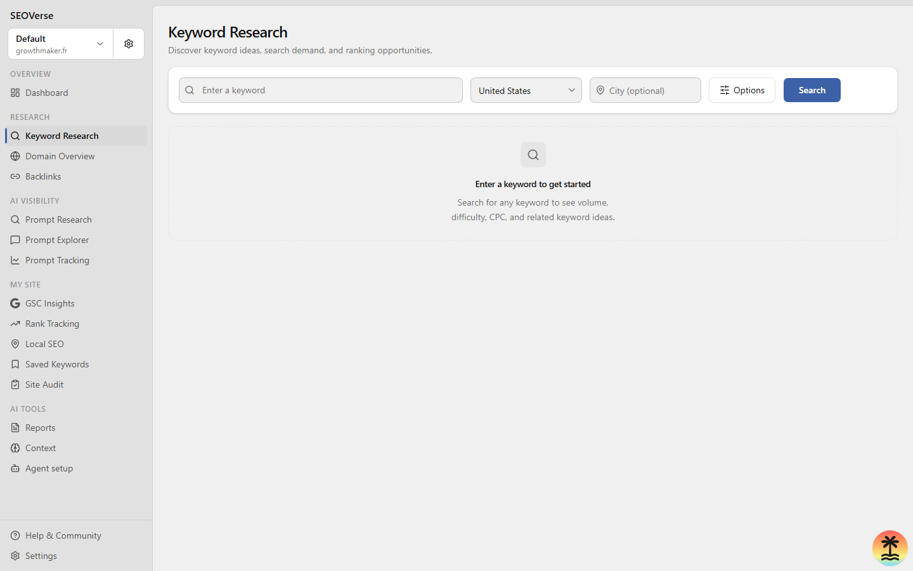
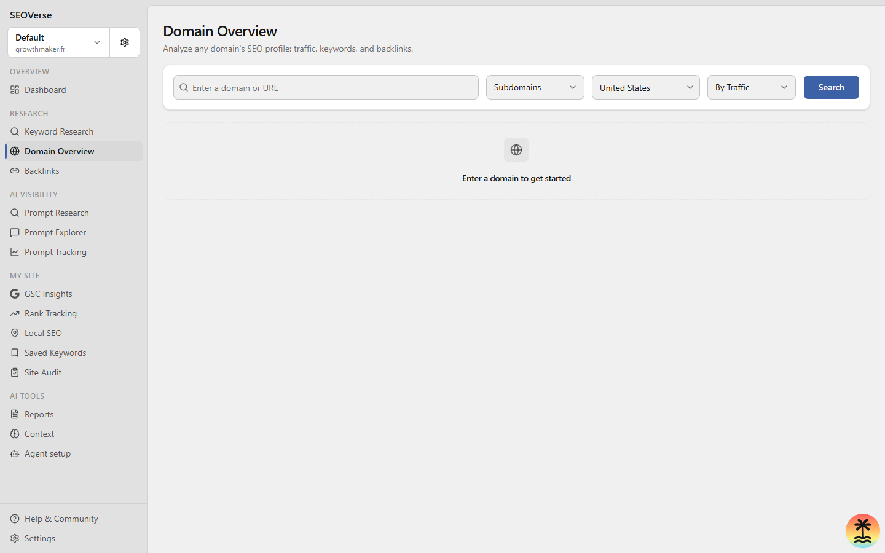

Search further.Grow organically.
Your open-source workspace for SEO and AI visibility. Research keywords, audit your site, and put twelve AI agent skills to work — on your own terms.
Open source. Local first. Built for the way you work.
One workspace. Every angle.
Explore the interface, from keyword discovery to technical audits and reports. These screenshots show the local app before data is connected.

From insight to action.
Designed to replace proprietary subscription lock-in with transparent, normalized SQL storage and autonomous agents.
Find your next opportunity.
Group thousands of related queries into structured topical authority pillars. Categorize search volumes, commercial intent, and SERP difficulty without paying for individual keyword credits.
Build on solid foundations.
Traverse internal link structures, test robots directives, diagnose redirect hops, and detect canonical errors. Identifies exact code fixes with line references for your engineering team.

See the competitive picture.
Benchmark your domain against leading market alternatives. Discover high-converting search keywords your competitors rank for and identify high-authority backlink opportunities.
Show up in AI answers.
Audit and track how conversational LLMs answer questions in your industry. Understand citation frequency, detect competitor recommendations, and optimize content for AI overview inclusion.
Shape your search result.
A small change can make a clearer first impression. Try your page title and description, and see how they read in search.
Try the snippet studioEdit the fields to shape your search result. Preview only; no website audit is performed.
Meet your twelve specialists.
Executable skill routines that give Cursor, Claude Code, Antigravity, and Codex the exact procedures to research, audit, and optimize.
| Skill Command | Workflow Objective | Category |
|---|---|---|
/seo-audit |
Audit a website, investigate crawl issues, and deliver a prioritized recommendations report. | Auditing |
/keyword-research |
Discover seed opportunities, analyze search volumes, difficulty scores, and user intent. | Research |
/competitor-analysis |
Map a competitor organic footprint, top ranking URLs, content gaps, and backlinks. | Competitors |
/keyword-clustering |
Cluster related keywords by topical intent and map them into actionable content silos. | Research |
/link-prospecting |
Find prospective backlink opportunities, verify contacts, and draft contextual outreach. | Competitors |
/local-seo |
Audit Google Business Profiles and track geo-targeted rankings across local radius grids. | Auditing |
/seo-coach |
Interactive strategy guide providing tailored prioritization between quick wins and long-term bets. | Research |
/seo-report |
Generate executive-ready SEO performance reports in self-contained markdown and HTML. | Auditing |
/seo-project-setup |
Configure domain baselines, tracked competitors, target geographies, and seed keywords. | Auditing |
/ai-visibility-audit |
Track how often your brand is mentioned or cited in ChatGPT, Perplexity, and Gemini answers. | AI Visibility |
/ai-prompt-research |
Uncover prompts and queries that prospective customers ask conversational AI in your sector. | AI Visibility |
/competitive-landscape |
Macro-level competitive share comparison across multiple industry domains. | Competitors |
Your stack. Your workflow.
Run everything on your own machine. From git clone to autonomous agent execution in four direct steps.
Initialize Local Repository and Database
Clone the repository, install dependencies with pnpm, and apply the SQLite migrations. No external paid subscription required.
git clone https://github.com/foverse/seoverse.git
cd seoverse
pnpm install
pnpm run db:migrate:local
pnpm run devA little more clarity.
Practical details on self-hosting, data persistence, and agent integration.
How is SEOVerse different from Semrush and Ahrefs?
How does the Model Context Protocol (MCP) work here?
Can I run SEOVerse entirely offline?
How do I self-host SEOVerse in production?
What is Generative Engine Optimization (GEO)?
Make your next growth move.
Free and open-source under the MIT license. Full code transparency and zero telemetry.